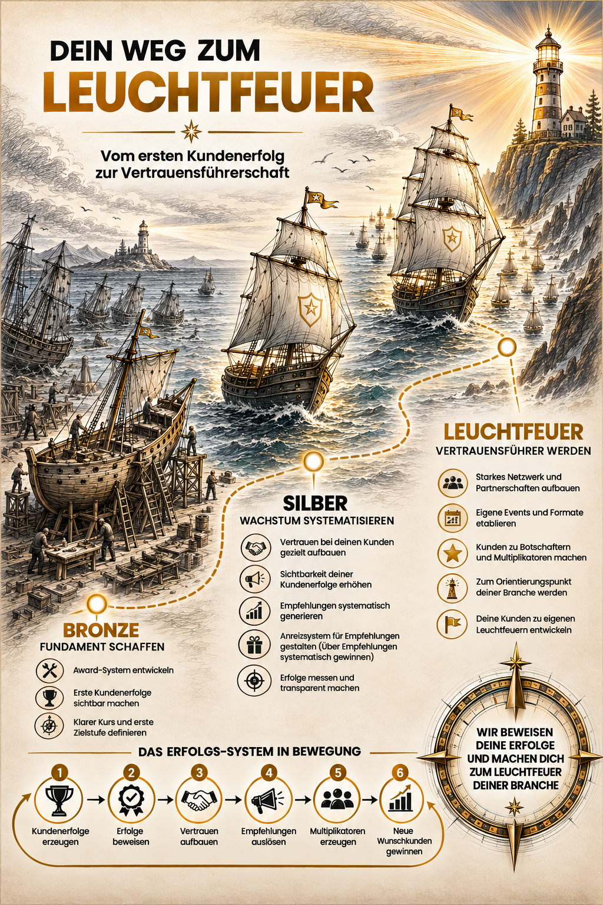
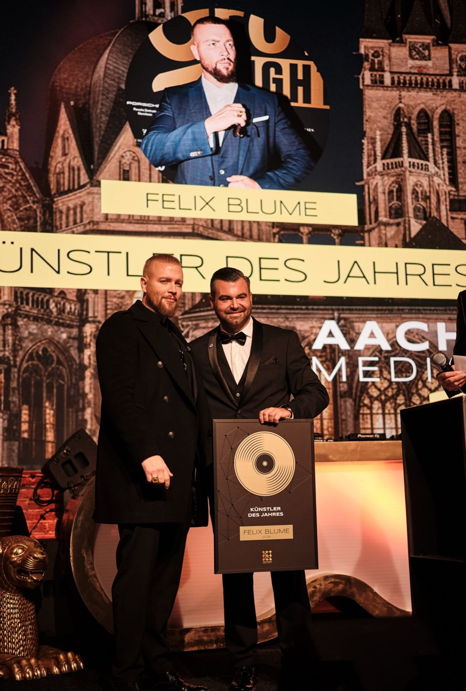
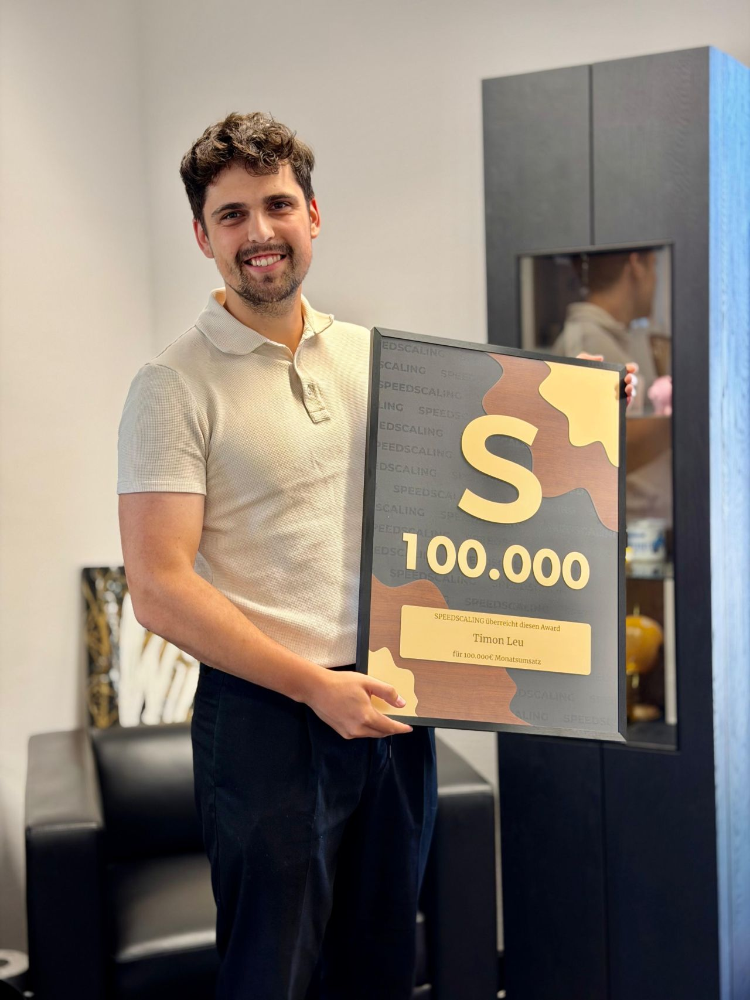
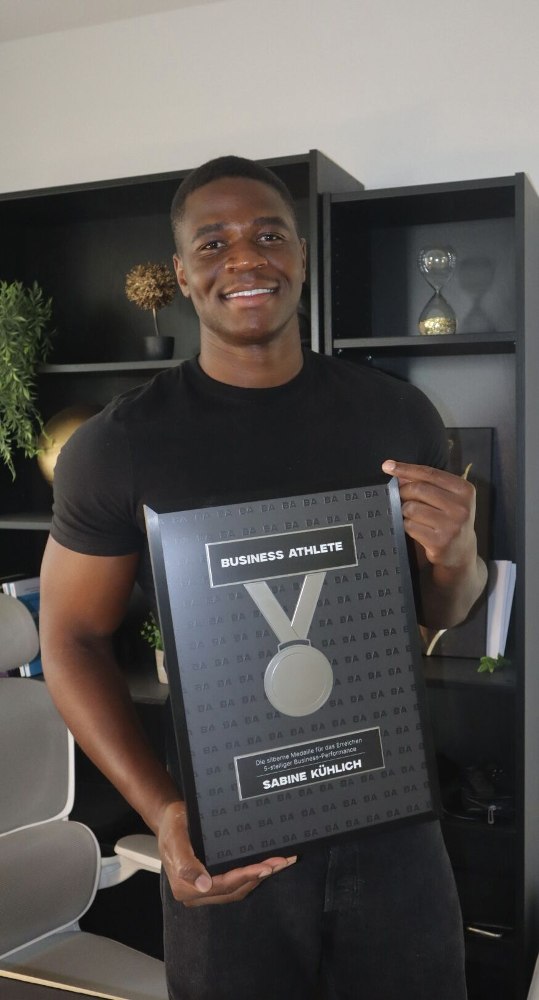
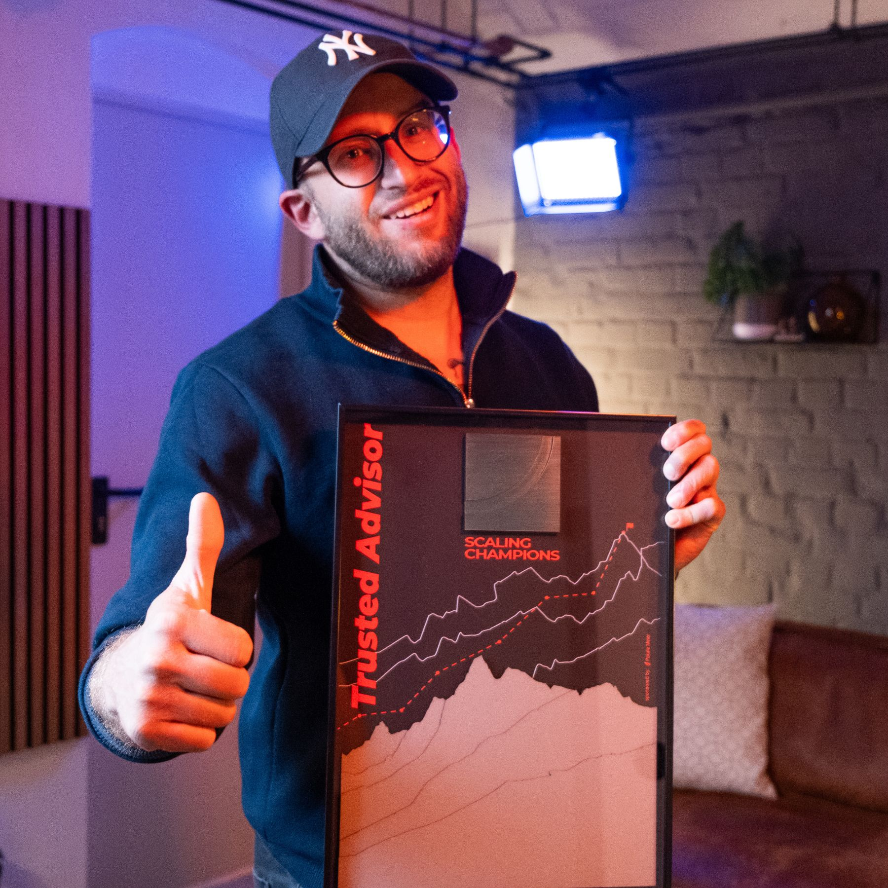
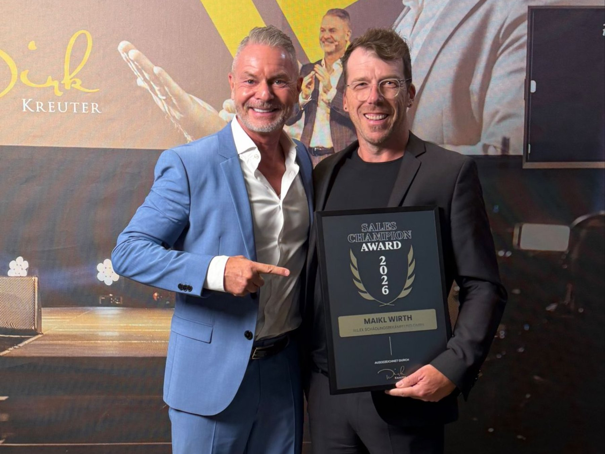

Bronze
Fundament schaffen. Erstes Kundenerlebnis sichtbar machen, klare Zielstufe und Kurs definieren.
Wir verbinden strategische Begleitung, einen festen Erfolgsprozess und die Erfahrung aus 8 Jahren als Award-Hersteller zu einem System, mit dem du deine Kundenerfolge beweist, mehr Sichtbarkeit erreichst, echtes Vertrauen aufbaust und nachweisbar Empfehlungen und Neukunden gewinnst. So wirst du in 3–6 Monaten zum Leuchtfeuer für deine Branche.
Fundament schaffen. Erstes Kundenerlebnis sichtbar machen, klare Zielstufe und Kurs definieren.
Wachstum systematisieren. Vertrauen bewusst aufbauen, Erfolge messbar machen und Empfehlungen auslösen.
Zum Orientierungspunkt werden. Kunden zu Botschaftern machen, Netzwerk aktivieren und neue Wunschkunden gewinnen.
Das Zielbild zeigt den gesamten Kurs: von der ersten sichtbaren Kundenwirkung über ein systematisches Empfehlungsnetzwerk bis hin zur Vertrauensführerschaft in deiner Branche.
Beratung, Stufenprogramm und individuelle Impact Frames verbinden Nachweis und Freigabe zu einem belastbaren Erfolgsprozess.

Awards werden zu Beweisen: bei Kundenevents, nach konkreten Meilensteinen und als Moment, der aus einer Leistung eine Geschichte macht.





Strategie, fester Prozess und individuelle Impact Frames: in einer klaren Umsetzung für deine nächsten 3–6 Monate.
Gespräch zum Erfolgs-System anfragen